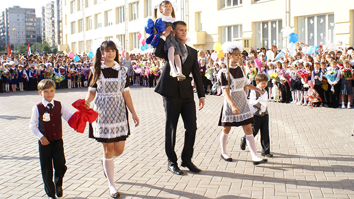

День знаний — это первые звонки и волнения, море цветов и белых бантов, и, конечно, традиционные уроки мира.
Это самый долгожданный день для тех, кто впервые переступит школьный порог.

Этот праздник появился в советское время. Официально как «День знаний» он был учреждён Указом Президиума
Верховного Совета СССР № 373-11 от 15 июня 1984 года «Об объявлении 1 сентября всенародным праздником — Днем знаний»,
который дополнил Указ Президиума Верховного Совета СССР № 3018-Х «О праздничных и памятных днях» от 1 октября 1980
года новым праздничным днём. И сегодня 1 сентября — праздник начала нового учебного года, прежде всего для учеников,
учащихся, студентов, учителей и преподавателей. Традиционно в этот день в школах проходят торжественные линейки,
посвященные началу учебного года. С особой торжественностью встречают в школах первоклассников. В средних специальных и
высших учебных заведениях, как правило, обходится без линеек, но торжественность момента от этого вовсе не уменьшается.
1 сентября — это праздничный день для всех школьников, студентов и их родителей. Мы поздравляем вас с этим замечательным
днем и желаем вам вспомнить о самом важном: о мудрости в жизни. Пусть в жизни вас и ваших детей всегда будет место знанию,
мудрости, которые помогают справляться с житейскими неурядицами.